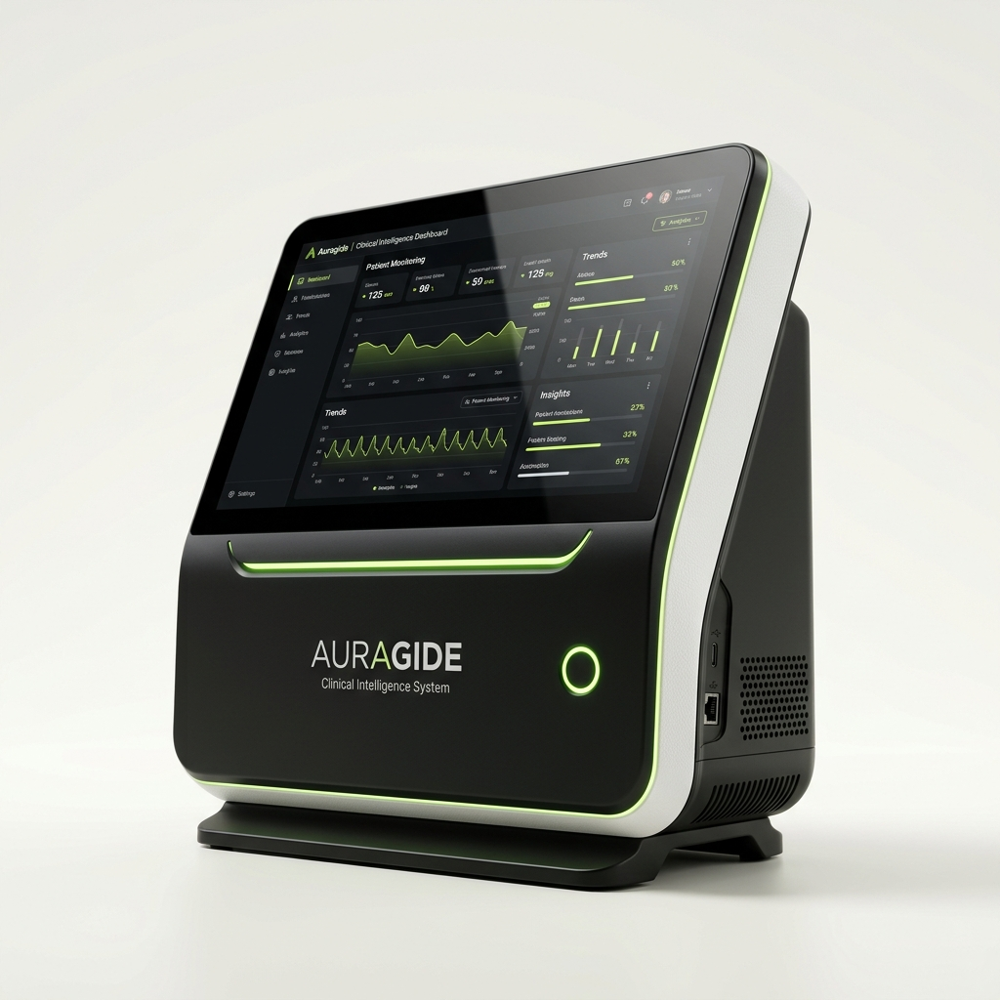
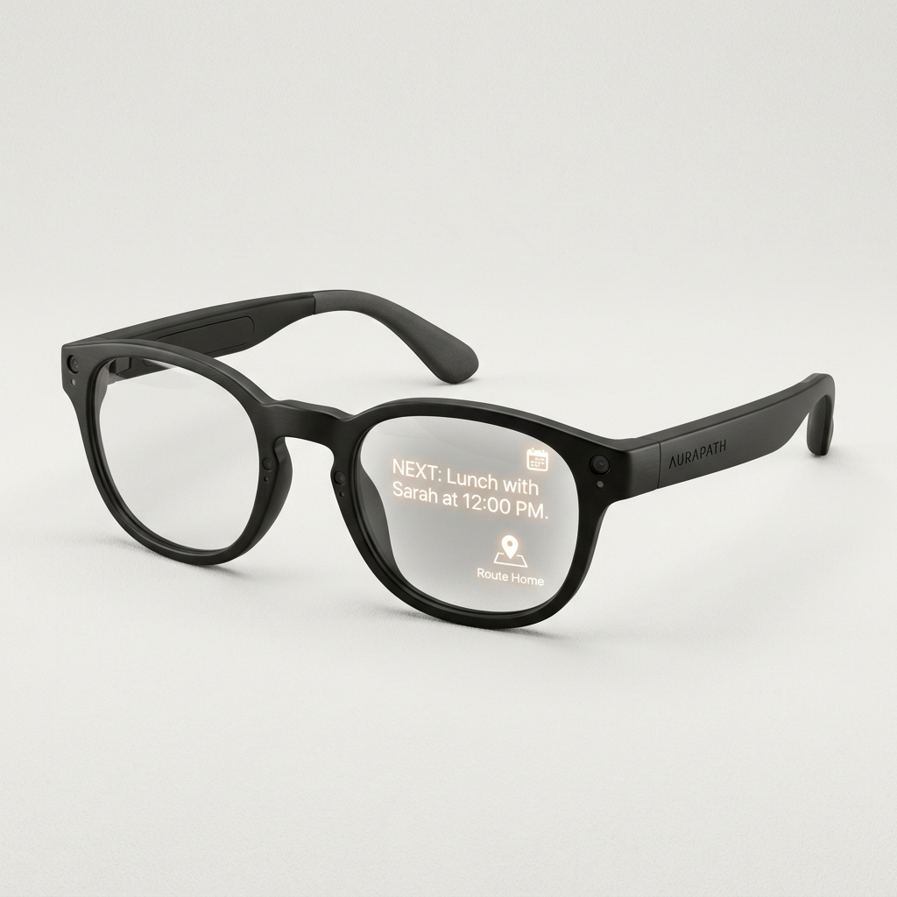

Dementia Care AI Suite
Precision Intelligence.
Precision Intelligence.
Restoring Dignity.
Clinical Intelligence
AURAGUIDE
The world's first agentic clinical co-pilot. AuraGuide transforms fragmented patient data into actionable bedside intelligence.
On-Device NPU
Epic/Cerner Integration
HL7 FHIR Sync

Deployment
Clinical Hub v3.1
Memory Prosthetic
AURAPATH
A "Social Prosthetic" for dementia care. AuraPath glasses restore dignity and independence to those with memory loss.
Face Recall <0.4s
Bone-Conduction Audio
Haptic Guide Core

Hardware System
AuraGlass-G2
Explore Innovation